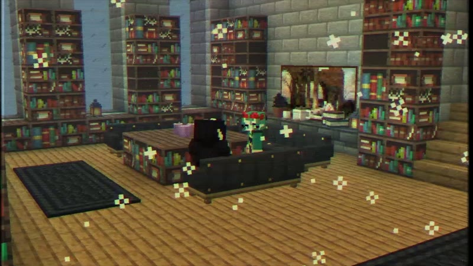
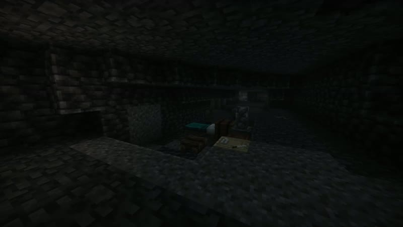
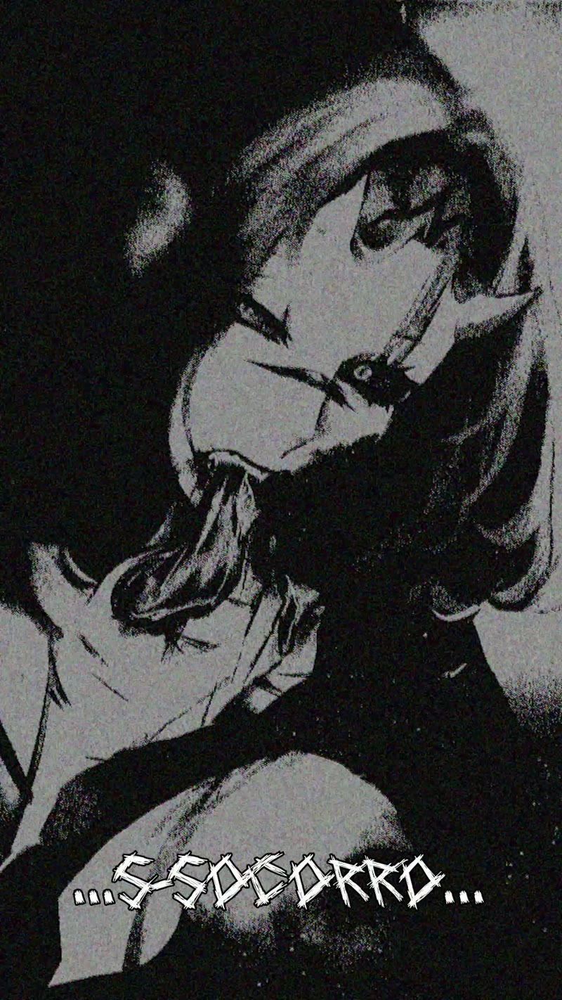
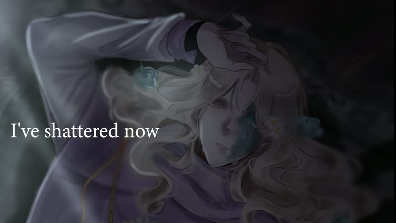
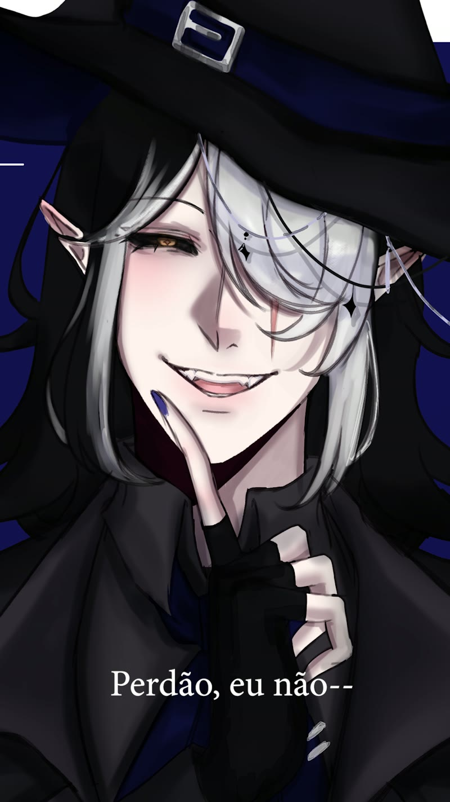
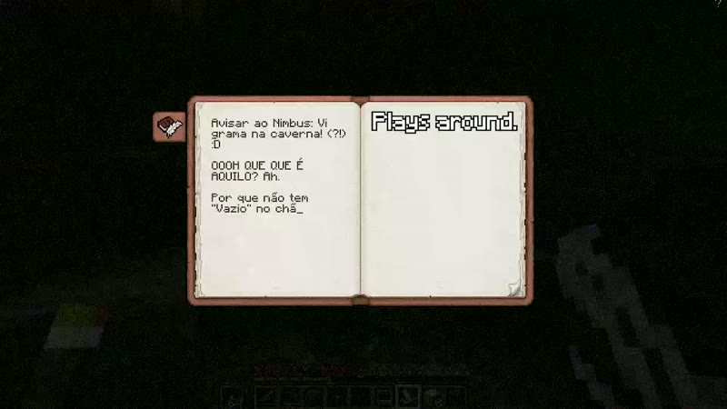

Vídeo

Violetta
Cineclipe de ficção gravado dentro do Minecraft, contando a história de Violetta.
Programação é só uma parte do que eu gosto de criar. Edição de vídeo, música, arte, mundo fictício e escrita — aqui está o que eu "coiso" por aí.
Edições e experimentos visuais montados no Adobe Premiere Pro — de praticamente edições musicais a cineclipes dentro do Minecraft.

Cineclipe de ficção gravado dentro do Minecraft, contando a história de Violetta.

Trailer e demonstração do mod Monstros e Máquinas para Minecraft.

Edição de ritmo e emoção com estética de mangá e legendas dramatizadas.

Edição musical sincronizada ao ritmo, com cortes e transições marcados na batida.

Edição de clima e narrativa, brincando com cor e corte.

Homenagem editada com carinho e sentido de humor.
Gravações, covers e efeitos sonoros — explorando som como mais uma forma de contar história.
Gravações vocais e de instrumentos em estúdio, com edição e mixagem.
Design de efeitos sonoros (como dados rolando) para uso em jogos e projetos.
Ilustração, pintura digital, logos, texturas e modelagem 3D — incluindo as artes do universo "Monstros e Máquinas".
Criação de logos e identidade visual para os meus projetos e comunidades.
Modelos 3D animáveis — criaturas e itens do mod Monstros e Máquinas.
Artes e ilustrações digitais autorais (ex. "Ruindade Pura"), feitas no Photoshop.
Modpacks temáticos e packs de textura que transformam o jogo em uma experiência própria.
Modpack de experiência "liminal" — ambientes vazios e inquietantes com atmosfera própria.
Texturas e tilesets que fazem parte da direção de arte dos meus mundos.
Textos que compõem a história do meu universo — o pós-apocalíptico de "Monstros e Máquinas", o vírus "Vazio", a organização T.U.R. e os seus personagens. Cada peça tem sinopse em português e inglês.
No 12º dia fora do Refúgio, alguém precisa ser enviado à morte — e uma voz se oferece no lugar de Thomas, quebrando a hierarquia de quem ele achava que seria escolhido.
LerArquivos classificados da Tactical Unit for Restoration — a organização que mantém os Refúgios vivos, mas esconde mais do que o governo consegue controlar.
LerA Dra. Carmine revela a verdade: o "Vazio" não é vírus nem magia — ele apaga a sua mente aos poucos e, ao terminar de consumir uma pessoa, assume a consciência dela.
LerDias no Jardim da Criação: a relação entre a mestra Violetta e Rosellyne enquanto correm contra as exigências abusivas da T.U.R. para deter o Vazio.
LerVocê acorda num limbo, em uma floresta que nunca viu, guiado por uma respiração e gemidos de dor distantes — uma história em segunda pessoa sobre memória e medo.
LerFlynt Guinevere lidera a equipe em uma expedição ao que foi ensinado como sentença de morte — numa subida onde cada segundo ecoa o temor do "Vazio", que é atraído pelo som.
LerSobre o destino cruel da assimilação: Violetta sente a mente sendo dominada por algo que não compreende e começa a apagar a própria memória para resistir.
LerO confronto final: "Ele" deixa a sombra e ganha voz, vinhas surgem do chão para prender Violetta — e a ironia cósmica cobra o seu preço.
LerEm segunda pessoa: você está de novo no mesmo corredor, e os passos atrás de você nunca deixam de se aproximar.
LerHitsuna Akane documenta 45 dias fora do Refúgio numa collab da T.U.R. — até o Dia 27 deixar de ser apenas um vlog.
LerO diário do grupo que saiu do Refúgio Cigarra após 2.740 anos — os Dias 1, 2 e 4 de exploração de um mundo em ruínas.
Ler